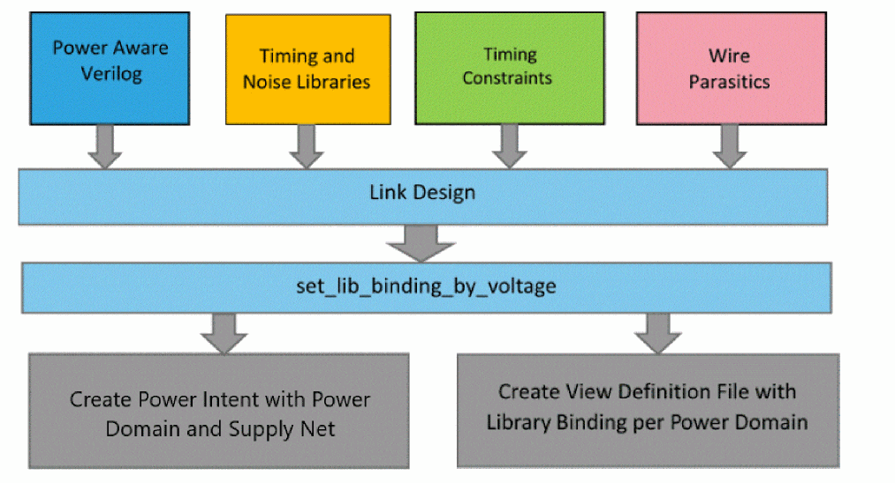
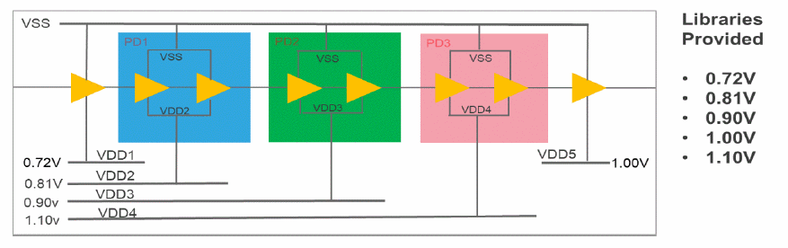
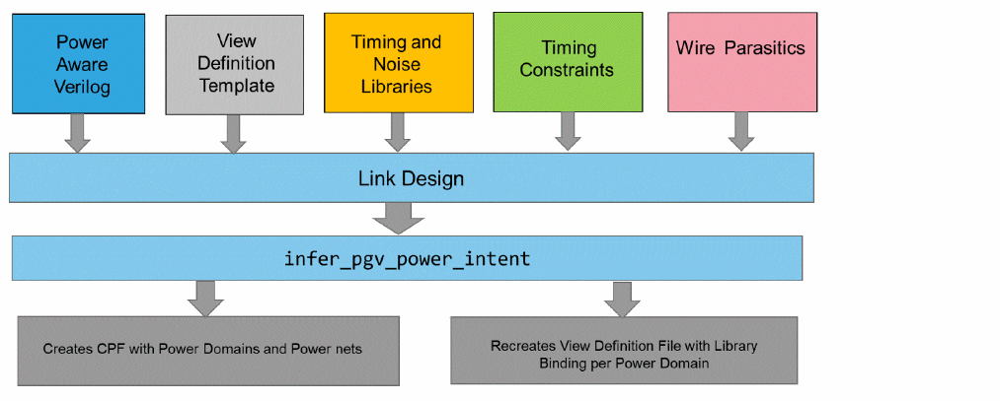

PGV Flows
The PGV flows in Tempus can be categorized as below, based on the various timing analysis practices:
PGV SMSC Flow
In the PGV SMSC flow, timing analysis can be performed in a separate session for each view (SMSC flow). The following figure represents the PGV SMSC flow:

In the PGV SMSC flow, Tempus requires a PGV netlist as input, along with other essential information required for static timing analysis. Run the set_lib_binding_by_voltage command after running the init_design command, which initiates auto-inferencing of power intent and view definition. The set_lib_binding_by_voltage command provides voltages for each power net in the design.
In PGV, the instantiation of each library cell includes power and ground pins and their connectivity, as shown in the following example:
module block1 (clk, in1, in2, out1, rail1, rail2, gnd);
input clk, in1, in2;
output out1;
input rail1,rail2, gnd;
.BUFX1 i0 (.A(in1), .Y(n0), .VDD12(rail1), .VSS(gnd));
.NOR_HVT i1 (.N_CORE_O(n1), .CNTL_CORE_I(n0), .PORTS_ON_33_I(in2), .VDD12(rail1), .VDDS33(rail2), .VSS(gnd));
.BUFX1 i2 (.A(n1), .Y(n3), .VDD12(rail1), .VSS(gnd));
.DFFHQX1 i3 (.CK(clk), .D(n3), .Q(out1), .VDD12(rail1), .VSS(gnd));
endmodule
SMSC PGV Flow Script
You can assert voltages for power rails using the set_lib_binding_by_voltage command, which initiates power intent inference and library binding. The following example presents the usage of the set_lib_binding_by_voltage command:
set_lib_binding_by_voltage
-power_net_voltages {<power_net_name> @<Voltage> <power_net_name>@<Voltage>}
[-process <num>]
[-temperature <num>]
You can specify the process and temperature of the corner using the -process and -temperature parameters of the set_lib_binding_by_voltage command, along with the power rail voltages. You can provide all the required libraries for all power domains upfront using the read_lib command. During library binding, Tempus creates library sets for each power domain based on matching PVT condition.
Following is the PGV SMSC flow script:
read_libs {list of Liberty files}
read_netlist <power_aware_verilog_file>
set_db init_read_netlist_allow_undefined_cells true; init_design <top_name>
read_sdc <sdc_file>
read_spef <spf_file>
set_lib_binding_by_voltage -power_net_voltages {net1@v1 net2@v2 .. } -process 1 -temperature 125
report_timing ...
PGV SMSC Power Intent Inference
Following is an example of the MSV design:
Figure -4 PGV SMSC Power Intent Interface

In this example, the PGV flow creates an internal CPF with five power domains, one each for every power net, as shown below:
set_cpf_version 1.0e
set_hierarchy_separator "/"
set_db top
create_power_nets -nets VDD1
create_power_nets -nets VDD2
create_power_nets -nets VDD3
create_power_nets -nets VDD4
create_power_nets -nets VDD5
create_ground_nets -nets gnd
create_power_domain -name pd_VDD1 -default
update_power_domain -name pd_VDD1 -primary_power_net VDD1 -primary_ground_net gnd
create_power_domain -name pd_VDD2 -instances {PD1}
update_power_domain -name pd_VDD2 -primary_power_net VDD2 -primary_ground_net gnd
create_power_domain -name pd_VDD3 -instances {PD2}
update_power_domain -name pd_VDD3 -primary_power_net VDD3 -primary_ground_net gnd
create_power_domain -name pd_VDD4 -instances {PD3}
update_power_domain -name pd_VDD4 -primary_power_net VDD4 -primary_ground_net gnd
create_power_domain -name pd_VDD5
update_power_domain -name pd_VDD5 -primary_power_net VDD5 -primary_ground_net gnd
create_global_connection -net VDD1 -domain pd_VDD1 -pins VDD
create_global_connection -net gnd -domain pd_VDD1 -pins VSS
… Similarly for VDD2 thru VDD5
end_design
The set_lib_binding_by_voltage command also creates the view definition file for single-corner analysis and assigns the operating voltage for each power domain. It also creates library sets for each power domain based on the assigned PVT and associates the corresponding library set with each power domain.
PG Net Voltages for Early and Late Analysis in PGV SMSC Flow
You can specify various early and late voltages for power rails using the -early_power_net_voltages and -late_power_net_voltages parameters of the set_lib_binding_by_voltage command. These parameters do not impact the inference of power domains.
However, library binding will look for a library for both late and early voltages of each instance. As a result, the view definition file written out internally will consist of both early and late library sets and late and early op_conds.
Late analysis will use the late operating condition and the late library set. Similarly, early analysis is performed based on the early operating condition and the early library set.
PGV MMMC Flow
In the PGV MMMC flow, timing analysis can be performed concurrently on multiple views. The following figure represents the PGV MMMC flow:

In addition to a PGV netlist, the PGV MMMC flow requires a view definition template file. In this template file, you can define all the required analysis views, including the corresponding RC corner, constraint mode, and delay corner.
However, you do not need to define a delay corner at the power-domain level. That means you only need to specify the design-level operating conditions. You can also create a single library set that includes all libraries to cover all power-domain voltages in a given timing analysis corner.
Power domains and power nets are independent of analysis corners, or rather, the same for all corners. Only the voltages assigned to power nets differ across analysis corners. You can define specific voltages for specific power nets in the view definition template file. For this requirement, use the create_delay_corner -pg_net_voltages parameter, as shown below:
create_delay_corner -pg_net_voltages \
{<power_net_name> @<Voltage> <power_net_name>@<Voltage> … }
This parameter serves the same purpose as set_lib_binding_by_voltage -power_net_voltages. After the design is loaded with the template view definition file, you can use the add_pg_netlist_power_intent command to initiate power intent inferencing.
This command creates an individual power domain for each power net, similar to the PGV flow without MMMC (SMSC flow). This command also updates the view definition file to update delay_corners with the power domain information.
This command creates library sets for each power domain based on PVT. Power domain PVT is inferred based on the voltage from the associated power net of the domain, and the process and temperature of the design-level PVT for the corner.
View Definition Template
The view definition template is presented below:
create_library_set -name libset_all_dc1\
-timing [list stdLib_volt1.lib stdLib_volt2.lib stdLib_volt3.lib\
IO_volt1.lib IO_volt2.lib IO_volt3.lib ]
create_rc_corner -name default_rc_corner
create_timing_condition -name dc1 -library_set [list libset_all_dc1]\ -opcond slow -opcond_library stdLib_volt2.lib \
-pg_net_voltages {VDD1@0.535 VDD2@0.7 VDD3@1.05} -rc_corner default_rc_corner
create_library_set -name libset_all_dc2\
-timing [list stdLib_volt4.lib stdLib_volt5.lib stdLib_volt6.lib\
IO_volt4.lib IO_volt5.lib IO_volt6.lib ]
create_rc_corner -name default_rc_corner
create_timing_condition -name all -library_sets all_libs
create_rc_corner -name rcTyp
create_rc_corner -name rcMin
create_rc_corner -name rcMax
create_timing_condition -name dc2 -library_set [list libset_all_dc2] -opcond best -opcond_library stdLib_volt4.lib \
-pg_net_voltages {VDD1@0.435 VDD2@0.65 VDD3@0.9} -rc_corner default_rc_corner
create_constraint_mode -name mode_func -sdc_files [list func.sdc]
create_analysis_view -name view1_func constraint_mode mode_func -delay_corner dc1
create_analysis_view -name view2_func -constraint_mode mode_func -delay_corner dc2
set_analysis_view -setup view1_func -hold view1_funcNote:
- The library set for each delay corner includes libraries for multiple voltages, which are assigned to different power domains during power intent inferencing and recreating the view definition file.
-
The
opcondspecified for each delay corner provides the process and temperature values for the corner. -
The voltage for each power net is specified with the
create_delay_corner -pg_net_voltagesparameter.
MMMC PGV Flow Script
Following is the PGV MMMC flow script:
read_mmmcread_mmmc view_definition_template.tcl
read_netlist <power_aware_verilog_file>
set_db init_read_netlist_allow_undefined_cells true; init_design <top_name>
infer_pgv_power_intent
set_analysis_view -setup [….] -hold [….]
report_timing ...
Run the set_analysis_view command after running the infer_pgv_power_intent command to activate the MMMC views for PGV analysis. Tempus updates the MMMC view definition with power domains for each corner and corresponding library sets after the set_analysis_view command is run.
The view definition template file preferably has only one active view. It is recommended not to specify all active views in this file.
PGV MMMC Power Intent Inference
Power domain inferencing in the PGV MMMC flow is the same as in the PGV SMSC flow. The view definition template file creation is also very similar, except that the PGV MMMC flow has multiple corners/views defined.
PG Net Voltages for Early and Late Analysis in PGV MMMC Flow
Similar to the PGV SMSC flow, you can specify various early and late voltages for power rails in the PGV MMMC flow. You can specify the -early_pg_net_voltages and -late_pg_net_voltages parameters of the create_delay_corner command in the MMMC view definition template to assign various early/late voltages for power rails in a given corner.
During library binding, libraries for both late and early voltages of each instance will be bound to each cell as late/early libraries. As a result, the view definition template file written out internally will consist of both the early and late library sets and late and early op_conds for each corner.
Late analysis will use late operating condition and late library set. Similarly, early analysis is done based on early operating conditions and early library sets.
Return to top